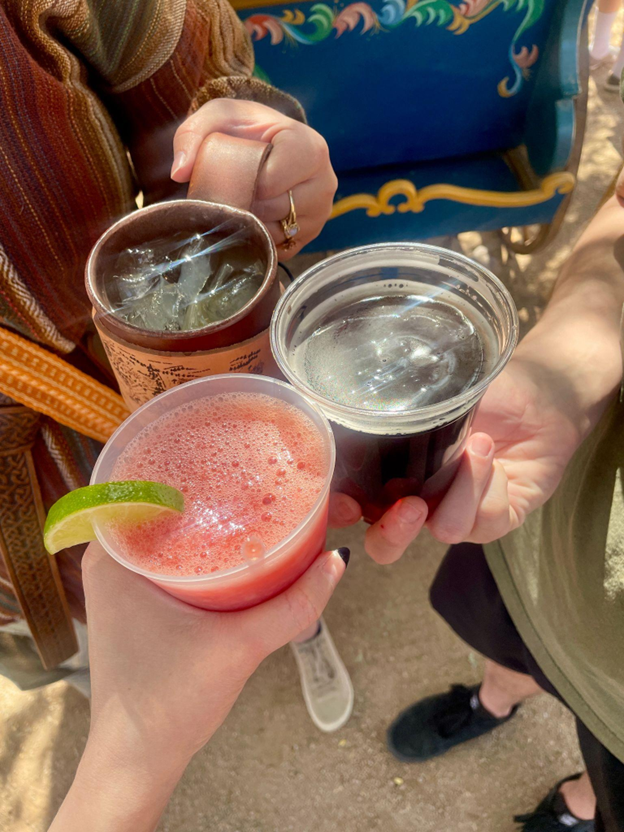

Az Renaissance Festival
Az Renaissance Festival
The Arizona Renaissance Festival (Ren Fest for short) is a staple of Arizona Spring time activities. Located in Apache Junction, near the Superstition Mountains, the festival runs from the start of February to the end of March, each weekend, “rain or shine.” Likely, other states put on their own Ren Fests, but I will be specifically discussing the Arizona-based function, as it is the only one I have experienced.
Growing up, I have memories of being taken to this strange affair. I remember grown adults dressed as fairies and scattered booths with flower crowns and palm readers galore. It’s funny to think that even as a child, I was not convinced of their fortune reading abilities! One can think of the Ren Fest as a type of Comic Con, but geared more towards those who enjoy Medieval/ Fantasy type realms. Don’t get me wrong, over the years, the festival has catered to the Comic community, with one of their weekends being advertised as “Star Wars themed,” but at its core, it encompasses the shield wielding, horse riding, turkey leg eating, fairy dust culture.
The appeal of the Ren Fest comes from the variety of attractions and things to do. There are plenty of shows, the most well known being the Jousting Tournament, there’s loads of shopping to choose from, food and drink to indulge on, including alcoholic beverages, and you can even get a kick out of seeing the die-hard Ren Fest goers who use this gathering to let their “freak flag fly!” If you are someone foreign to this type of “nerd culture,” this is your opportunity to rub elbows with people who count down the days until they can show off their meticulously crafted garb, practice their Old English accent and spend their savings on Medieval mementos. I am certainly no die-hard when it comes to the Ren Fest, (my version would be a Jack White concert) but I enjoy attending with those whom it brings lot’s of joy, and also for my own motives, which I will get to next.
When I embark on the Ren Fest adventure, I abide by the same format each year. First, I make sure to go with my closest friend, who happens to be one of those “die-hards,” I purchase the specialty garlic powder requested by my Mom, I buy a year’s worth of handcrafted incense (really, the best out there!) I drink at least two alcoholic beverages and I attend one Jousting Tournament. If you have a friend who is really into this kinda stuff, it’s always best to be chaperoned by them-- my friend has the map of the Ren Fest literally ingrained into her memory!She also knows all the best tips and tricks, like where to sit during the Jousting Tournament so as to get the least amount of sun. This year, I even splurged and bought myself a corset! I have always enjoyed playing dress up and thought that the corset would not only get it’s use at my yearly Ren Fest attendance, but could also be incorporated into a Halloween costume. This justified my purchase! All this to say, even if you are not a huge fan of Medieval/ Fantasy lore, I can guarantee that there will be SOMETHING at the Ren Fest to make it worth your while-- even if that’s a guy on stilts insulting passerbyers!
What I've learned: Arizona weather can be unpredictable-- it might be scorching hot and it might be beautifully overcast-- either way, make sure to research weather conditions before going and be prepared. The Ren Fest grounds are quite literally ground, as in dirt, so don’t wear anything you're afraid to get dirty. All food and drink purchases are cash only, so bring some cash to avoid ATM fees when you find yourself salivating for some grub. Be prepared to see a variety of people wearing beautiful, and sometimes bizarre, costumes-- this is their turf and we are simply guests in their world of imagination and play. Finally, go into the experience with an open mind and try to have fun!